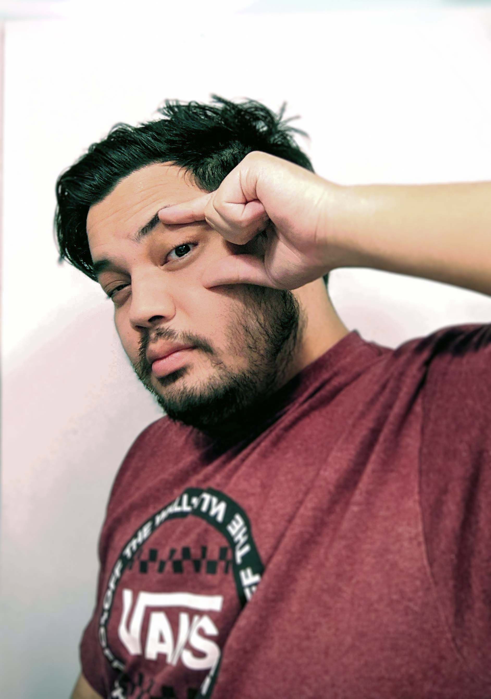

"My work shows my ideas and emotions put onto a digital canvas. Building upon my own research of coding, art history, and various art styles, I incorporate these into my works to put an innovative take on today's contemporary art. What I experience when I create my art is what I want people to experience when they see my art." - Artist Statment (Santino Santos)
Santino Santos is an artist, musician, and tech enthusiast from the San Fransisco Bay Area. His projects include game development, video production, and digital art; often combining them with illustration and design. He is a graduate from Evergreen Valley College (AA of Studio Practice 2019) and is currently attending San Jose State University (BA of Studio Practice 2021).
As a child, Santino was always drawing, even getting into trouble for drawing in his notebooks. He discovered his love for computers when he was about 13 years old when he would teach himself the basics of HTML. During his time at Santa Teresa High School, Santino would become an assistant designer for Globaloria, a computer design program teaching students how to program and code based on various school subjects. He would eventually earn Honor Rolls in Globaloria, Computer Science, and Drawing/Painting (2013). Santino later learned advanced HTML and CSS during his time at Evergreen Valley College (2019) and San Jose State University (2021).
Santino cites Keith Haring, Jean-Michel Basquiat, Salvador Dali, Christian Marclay, Hito Steyerl, Jim Campbell, and Yolande Harris as his biggest influences.